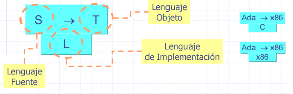

Los diagramas de Tombstone también denominados diagramas en T se utilizan para poder captar claramente todo el camino en el diseño y construcción de compiladores de una manera muy visual. Hay cuatro tipos distintos de diagramas en T:
Compilador: Los 3 lenguajes que definen un compilador se pueden representar como se ve en la figura a continuacion: el lenguaje fuente (origen), el objeto (destino) y el que usa el propio compilador (implementación).
Programa: Representa el programa P escrito en lenguaje L.
Máquina: Indica la plataforma de ejecución, el sistema operativo o el ordenador de ejecución M.
Intérprete: Representa el intérprete del lenguaje L escrito en M.
Utilizando distintas combinaciones de los 4 diagramas básicos se pueden diseñar los pasos necesarios para la creación de los compiladores o para la ejecución de los programas. Para unir dos diagramas se utilizan unas reglas d eunión básicas que aseguran su coherencia: dos diagramas se pueden unir si los lenguajes que se tocan en el punto de unión son iguales:
Esta técnica divide el proceso de traducción en dos partes: en la primera utiliza un traductor del lenguaje fuente a un código intermedio y, en la segunda, utiliza otro para traducir el código intermedio al lenguaje objeto. Como ya hemos visto esta división resulta muy útil cuando se deben desarrollar diferentes compiladores para distintas plataformas
Esta técnica genera código objeto para un ordenador distinto del que lleva a cabo la compilación. Muchas veces hay que desarrollar compiladores para máquinas que todavía o existes y es entonces cuando reutiliza esta técnica. En el ejemplo lateral la idea consiste en escribir L con el compilador para la nueva máquina MX que todavía no tenemos disponible. Una vez escrito con una máquina que tenga disponible un compilador de L (2) obtenemos un compilador que genera código para la nueva máquina MX pero que se ejecuta en la vieja M.
En general, cuando se desarrolla u nuevo compilador, se parte de una base ya existente y se aprovecha la organización conocida para acelerar el proceso: normalmente se aprovecha algún lenguaje de alto nivel para crear el nuevo compilador. Un autocompilador está escrito en el mismo lenguaje que se quiere compilar. Por ejemplo si se quiere crear la versión 8 del compilador de Fortran y se tiene disponible la versión 7, el nuevo compilador debería generar un código de ejecución más rápido y eficiente que el de la versión anterior. Dado que hay muchas máquinas que disponen de Fortran 7, es mejor desarrollar la nueva versión en Fortran, de esta manera, el compilador de Fortran 8 podrá crearse y estar disponible en todas las máquinas que ya tienen el compilador de Fortran 7.
A veces interesa compilar rápidamente el programa fuente para comprobar que esté libre de errores y generar, al mismo tiempo, un código intermedio sencillo. Después, éste código intermedio puede ser distribuido a diferentes plataformas en las que se utilizará un intérprete para ejecutarlo. La unión del intérprete y la plataforma de ejecución es lo que se denomina máquina virtual. Java es un ejemplo de compilador interpretativo, primero se compila para dejar un código libre de errores y después, como se ve en la imagen lateral, se utiliza la Java Virtual Machina (JVM) de cada plataforma para interpretar el código intermedio.


 Informacion Básica
Informacion Básica Autores
Autores